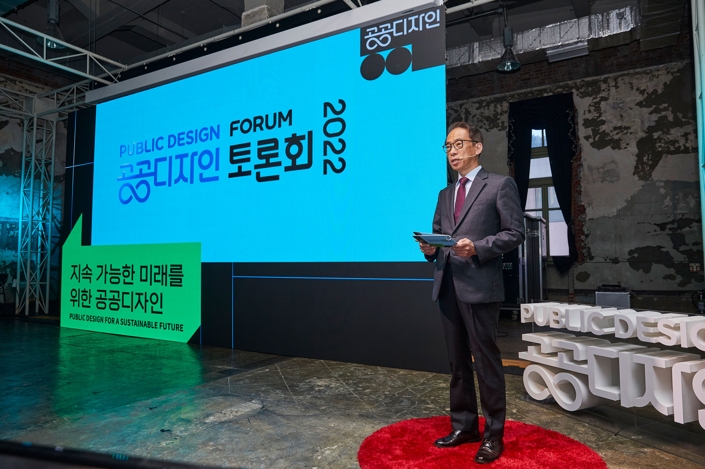

Public Design Forum 2022
문화체육관광부가 주최하고 (재)한국공예디자인문화진흥원이 주관하는
'2022 공공디자인 토론회-지속 가능한 미래를 위한 공공디자인'의 그래픽
디자인 작업에 참여했습니다.
Field
Graphic, Printed Matters
Date
Sep—Oct. 2022
Team
© studio fnt
- Creative direction: Heesun Kim
- Art direction: Jaemin Lee
- Graphic design: Younghyun Song
- Motion design: Ajeong Kim
- Creative direction: Heesun Kim
- Art direction: Jaemin Lee
- Graphic design: Younghyun Song
- Motion design: Ajeong Kim


공공디자인토론회 2022 자료집을 제작했습니다.
행사 참여자들에게 배포되었으며, 공공디자인 종합정보시스템 웹 자료실에서 열람 가능합니다. 다시보기는 아래 링크에서 지원됩니다.
public design forum book link
행사 참여자들에게 배포되었으며, 공공디자인 종합정보시스템 웹 자료실에서 열람 가능합니다. 다시보기는 아래 링크에서 지원됩니다.
public design forum book link

작업에 참여한 공공디자인 토론회 2022의 이미지만을 게시했습니다.
공공디자인의 아이덴티티(2021) 및 더 많은 작업물들은 https://studiofnt.com 에서 감상이 가능합니다.
공공디자인의 아이덴티티(2021) 및 더 많은 작업물들은 https://studiofnt.com 에서 감상이 가능합니다.
×
〈
 〉
〉